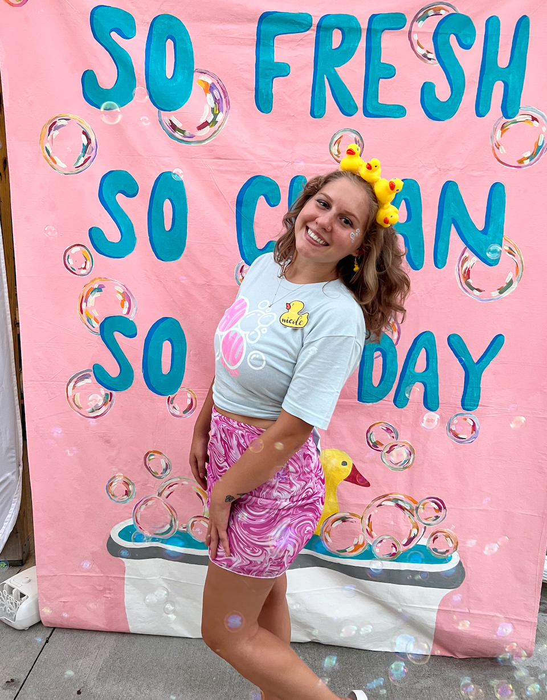

Nicole Dietzenbach
Education
-
School: Northwest Missouri State University
- Web Development II
- Intro. to Geography
- Brand Identity Design
- Advanced Digital Art Studio
- Prinicples of Marketing
Major: Digital Media Visual Imaging
Minor: Advertising
Fall Courses:
Me!

Work Expereince
- On Campus:
- Web Assistiant for Student Account Serivces
- I worked this summer in the Administration Building working for Student Account Services. I worked with other organizations on and off campus who wanted to create U.Commerence stores. Many organizations sell different items including; tickets for events/programs, ads for the Missourian, rentals for different business and even study abroad payments. I am also in charge of processing refunds for this websites and working closing with the clients, trying to design how they want their website work and look. My favorite website I have been working all for a few weeks is for the Missourian. I was in charge of creating a store for them to sell ads that go into the weekly newspaper print and online edition as well as their newsletter.
- Tower Yearbook
- Durning the school year I work with Tower Yearbook as a designer. I started last August and love this job. The staff is amazing and I love getting to create a book that everyone on campus can see. I did not work with them over the summer but I am going to be countining my postion this year.
- Web Assistiant for Student Account Serivces
- While I was living in Maryville this summer I got a job at Appleebee's. I worked as a hostess durning the night. I greeted people as they walked into the resturant and sent them fareweels as they left. Another duty of my job was helping servers bus tables and clean them for the next poeple arriving.
Off Campus: Hostess at Appleebee's
Organizations
Newman Center
Phi Mu Zeta Lambda
I am apart of greek life on campus and it has been one of the best expereinces. Not only do we get to have events with our sorority and grow connections with our own sisters, we are all apart of greek life. Being in greek life everyone can support each chapter on campus. In Phi Mu I am on the executive board as Panhellenic Delegate and I am Homecoming Overall Chair along with two other girls in my sorority. This summer I also was in charge of painting our bid day banners and letters. It was a fun relaxing activity for me to do outside of work.
Hobbies
Summer Activites
Most of my summer activites I have stated above already including; working on and off campus, paiting banners for my soroity bid day, and chilling with my friends. I also got to go to Califorina this summer to spend a week with on of my friends who was working out there this summer. We got to go to Yosemite National Park and go to the beach almost everyday. I was one of my favorite parts of the summer and I hope to go back soon!